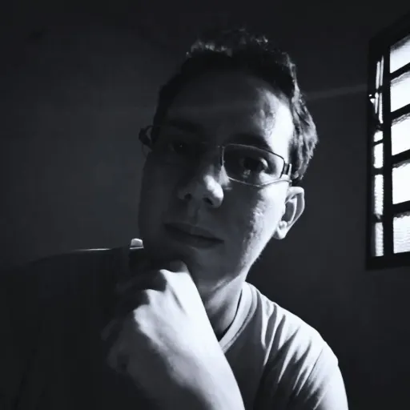

Willian Quirino
Autor, ilustrador e compositor
Histórias perdidas.
Universos reencontrados.
Willian Quirino escreve fantasia e ficção científica atravessadas por conflitos, memórias, sobrevivência e transformação. Sua trajetória começou ainda na infância, antes que ele compreendesse completamente a dimensão dos mundos que estava criando.
Os primeiros registros de Elemental foram escritos à mão em um diário de 2006, quando Willian tinha por volta de dez anos. Em outro diário, de 2008, surgiram os manuscritos de Veter.
Depois de sofrer um derrame em 2012, grande parte das memórias anteriores àquele período se tornou fragmentada. Em 2013, antigos cadernos guardados revelaram histórias ainda inacabadas e abriram um caminho para reencontrar aquilo que havia sido criado.
Sobre o autor
Escrever também foi uma forma de reconstruir.
Ao reencontrar os diários, Willian decidiu respeitar a essência das histórias criadas no passado. Elemental já possuía sua ideia central formada; em vez de substituí-la, ele continuou o universo que encontrou nos próprios cadernos.
Em 2016, começou a desenvolver uma crônica ainda não publicada, criada para narrar acontecimentos anteriores a Elemental. A obra permanece em desenvolvimento e faz parte do universo maior que conecta suas histórias.
Em 2017, concluiu Elemental e Veter e iniciou, novamente à mão, A Terra dos Monstros, finalizada no ano seguinte.
Para Willian, uma história não termina nas palavras. Ilustrações, sons e emoções também podem aproximar o leitor de um mundo imaginado.
Uma trajetória em construção
Dos diários à publicação
As primeiras páginas de Elemental
Os registros mais antigos da história aparecem em um diário manuscrito, quando Willian tinha por volta de dez anos.
O nascimento de Veter
Outro diário preserva os primeiros manuscritos da obra que viria a acompanhar sua jornada literária.
Memórias fragmentadas
Um derrame afeta grande parte das lembranças anteriores daquele período.
O reencontro com os diários
Os cadernos antigos devolvem histórias inacabadas e pistas de um universo que precisava continuar.
Uma história anterior a Elemental
Começa o desenvolvimento de uma crônica ainda inédita, ambientada antes dos acontecimentos do livro.
Dois finais e um novo começo
Elemental e Veter são concluídos. No mesmo ano, começa o manuscrito de A Terra dos Monstros.
A Terra dos Monstros é concluída
A história de Melina e das cidades-fortaleza encontra sua forma completa no diário.
Os cadernos se tornam livros
Os manuscritos são transcritos, revisados e acompanhados por ilustrações e trilhas sonoras próprias.
As histórias chegam aos leitores
Veter, Elemental e A Terra dos Monstros são publicados pela UICLAP.
Reconstrução pessoal
Histórias criadas na infância, reencontradas depois da perda de memória e finalmente compartilhadas com os leitores.